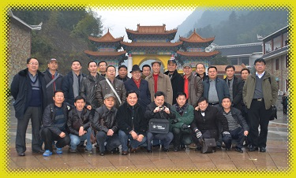
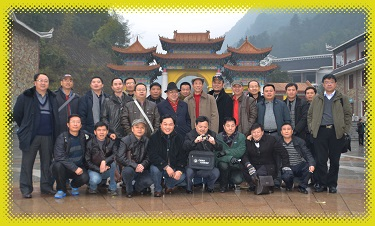

恩师仙逝 教泽难忘
——记贵州大学知名教授税哲夫先生
廖莉萍
轻轻的你走了，
悄悄的你走了。
不带走一片云彩，
却留下许多、许多......
2015年的一天，我尊敬的硕士导师—税哲夫教授走过了他89岁的人生里程，永远地离开了我们。离开了他一生热爱的地质事业，离开了他钟爱一生的地质讲堂，将自己的一生献给了地质教育事业。早年他主要在广西桂北、云南个旧等地从事锡矿研究，成果卓著。上世纪九十年代，他在黔西南开展冰洲石矿床研究，发现了巨型单晶冰洲石矿床，为国内外罕见，在地学理论具有重大的学术意义，对冰洲石的开发也具有重要的经济效益。他桃李满天下，培养了大批本科、硕士研究生地学人才，如今他们活跃在国际、国内的地学舞台。这，正是他最为欣慰和满足的！
导师一生教书育人，热爱地质。他严谨的治学精神和高尚的人格风貌给我留下了深刻的印象。他，总是昂首挺拔，头戴礼帽，穿着一身干净的（皮）夹克，逢人便脱掉礼帽，彬彬有礼，一副高贵的绅士学者派头……
导师1926年出生于四川射洪县的一个工商业兼地主家庭，从小受到良好的家庭教育，解放前就读于重庆大学地质系。他家境优裕，困难时期，他富有的家庭也不忘开仓接济穷人。良好的家庭教育，培养了他学识、仁爱、自信于一身。纵然在那被错划成右派的岁月，他依然腰板挺直，穿着整洁，秉持傲骨。
刚进大学校门时，我就知道贵州工学院地质系有许多出名的教授。1958年贵州工学院建校时，为了支援贵州工学院的师资建设，他们分别来自全国名校，税老师就是从重大地质系来到学校的。当时我就想，毕业时一定报考他的研究生。
1986年3月，大学毕业实习时，我自然而然地选择了税老师指导的毕业实习组。当时他主要是指导朱立军老师做硕士论文选题，顺便指导本科生的毕业实习，我与其他3名同学一起跟随税老师来到了广西九毛锡矿。记得那时他已近花甲，但仍然精神矍铄，气质优雅。他不顾野外条件的艰苦，与我们一起翻山越岭、下矿井，吃住于矿山。在我如愿考上本校的研究生后，填报志愿时，第一、第二志愿我都毫不犹豫地写下税哲夫教授作为我的指导教师。直到1986年8月的一天，税老师带我到贵州地矿局廖士范老总办公室时，我才知道，当时我被计划列为省地矿局与贵工联合培养的研究生。我又有幸得了一位硕士导师。研究生期间，我主要跟随廖士范先生从事铝土矿研究。在当时，税老师完全可以对我不闻不问，但他没有，而是与他单独培养的研究生一样，对我一视同仁，继续关心我的学习，直至我参加工作、成家立业。
学生生涯是短暂的，但老师做人的思想和精神潜移默化在影响着我。生活中的老师就如一位仁爱的父亲，十分关心我们。记得在校时，他常邀我们去他家聚餐，亲自下厨，为我们做好吃的，使我们感受到了家的温馨、温暖；毕业后，他还十分关心我的家人和子女。也许他与我父亲曾经有过相同的际遇吧，他总是关心着父亲的身体生活，常常对他嘘寒问暖；对于我儿子，读书期间，每个阶段他都要打电话来问询他的学习成绩。这就是我的老师，仁者爱人！他不仅教我做学问，更是在教我做人，他在传承爱的理念，播撒爱的种子！
进入耄耋之年后，老师更是想念关心我们。记得2013年春节，我去学校看望老师，一见面，他就欣喜地告诉我，他的手机是可视电话，才一千多元，我半天没反应过来。原来是视频，每个智能手机都具备的。他高兴地说，要用退休工资给我们弟子人手一个。顿时，我禁不住的泪水差点掉下来：这就是我的老师，将我们当成他的孩子！
老师还十分乐于帮助他人。他一生勤奋好学，对于中医也颇有研究。早年野外期间，他经常用自己学到的中医术为同事治病。有一次，他的学生李明琴在野外腰被扭伤，看病十分艰难，税老师便拿出他的临时药箱，在她耳朵穴位上扎起了针灸，很快她的疼痛就消失了。我常在想，老师是什么时候学的中医？可能只有在打成右派后才有时间吧。我听说过，受过挫折的人，都懂一点中医术，因为他们都很明白，学问治国，医术治民。如若坐牢或关进牛棚，救不了国，还可以为民服务！蓦然，老师高大的形象升腾在我眼前！
师者,传道授业解惑者也。我的老师不仅为我们传道授业解惑，而且在传承爱的精髓和播撒爱的种子，他是人类灵魂的工程师！
导师一生热爱地质，特别是他的矿床学专业。他一直建议和期待贵州成立一个矿床研究机构，同时呼吁他所在的资环学院加强矿床地质的研究及学科建设，这样具有资源丰富的贵州，矿产资源才能得以充分研究、利用及开发。这将激励后学者更加热爱地质事业，并为之努力！
呜呼，恩师已逝，他的思想、精神犹存！他的人格魅力和精神风貌将永存我们心中！
安息吧，老师！
工学院地质系地勘82级 廖莉萍
2015年9月14日
2015年春节期间，到蔡家关税老师家中探望老师时的合影
1986年3月21日，税哲夫教授指导硕士研究生（朱立军）和地勘82本科生（廖莉萍、李明琴、练兵、罗晓毅）
在广西融水县九毛锡矿开展毕业实习选题工作
走出“学院”、走出“课堂”，到外面广阔的世界去“闯”
-----对资环学院广大的中、青年教师和青年学子的谏言和期望
李景阳
有句歌词说得好：“外面的世界很精彩”,对于搞地质和环境科学的人来说，这句话说得也很贴切！众所周知，地质学和环境科学都是以“地球”为研究、探讨和服务的对象，就更加离不开实践。有句老话说得好：“实践出真知，实践是检验真理的唯一标准”。这是一条永远颠扑不破的真理，对一切事物都是如此！我仍可以说，没有调查研究就没有发言权，没有深入实际认真的调查研究也没有发言权。下面结合我自己的两项“科研”成果来进一步阐述上述观点。
一、近些年来，岩溶山区“石漠化”问题，引起岩溶学和环境科学界广泛探讨，而且被“炒得火热”！所谓石漠化，是指岩溶山区大面积、广泛裸露的“石山”、寸草不生、一片荒凉。究其原因，很多学界人士都归结为石山地区砍伐树木植被、陡坡开荒等人为破坏有关；调查研究表明：并非完全如此！有些“石山”地区根本就没有“土”，没有土层成土条件，所以这个问题是被“人为的扩大化了”。研究探讨这个问题要从岩溶山区的土是如何形成的，它们的侵蚀、搬运、堆积的规律如何来全面探讨，不能只看一点、以偏概全！从另一个角度来看：陡坡和石缝里的土被搬运到岩溶谷地、洼地堆积起来，形成可开垦的“土地”，未尝不是“一件好事”。
关于岩溶地区成土条件，笔者曾提出：溶蚀、交代“成土理论”。这一观点已经被后来的研究者广泛的采纳和证实。这一看法的提出过程是这样的：笔者在贵州省遵义市“忠庄铺”一个烧制砖瓦取土的场地发现:当碳酸盐上覆的厚土层剥去之后，在岩石的表面上还遗留着保持原岩产状、但已经成土的的貌似“岩石”的土层。这一发现推翻了“几百米厚的碳酸盐中不溶组分溶蚀残余形成几米厚的土层，溶蚀残余成土学说”。
二、笔者及研究团队的第二个重要发现和成果是“岩溶洞穴沉积物生物成因的学说”。凡去过岩溶洞穴参观、游览和考察的人，无不为“千奇百怪”迷人的洞穴沉积物的景观所陶醉！它们到底是如何的？按过去的观点是“洞穴顶部或侧壁包含碳酸盐类的水，渗流到洞穴中，由于水中CO2的逸出而沉积下来的……”。但是这种观点却无法解释为什么没有滴水或渗水的地方有洞穴沉积物生成？洞壁上的石花、卷曲石以及石荀上的叶片向斜上方“生长”？有小的雏形个体，也有“长大后成形”的个体……等等许多现象？我们的研究团队吸收了搞微生物的专家参加，我们很快鉴定出现在沉积物上有仍然“活着的”藻类个体以及已经石化的个体。这一发现说明“多学科综合集成”的观点多么重要。限于篇幅此处不宜深入探讨，有兴趣的可以查阅本人及团队其他人发表的论文和著作。
以强烈的、永不满足的“好奇心”去观察世界，对问题要寻根问底，多问几个“为什么”、切忌“人云亦云”！我建议没有读过由多位院士应邀执笔的《十万个为什么》丛书的，去读一下，以便启发自己的“思维”，使其永远在“路”上！这方面让我再举两个例子：
一、1962年我在成都理工学院（原成都地质学院）任教时，曾参加过由国家水运局组织的“金沙江航道通航条件的工程地质调查”，调查时有很多发现，恕不赘述，但迄今有一个问题仍叫我念念不忘的是：金沙江高阶地上沉积着被工程界称之为“龙街粉土”的土层，土层的分布很特殊，它不但沿江分布，而且也没所有支沟一定高程上水平分布，分布表明，这是一个“静水环境下库盆沉积物”。金沙江这样大的河流，是什么原因、何时、何地堵江形成天然水库？这尚待后人去评说，但有一点是肯定无疑的，静水环境库盆沉积物是肯定无疑的！
二、无独有偶，在贵州六冲河上游，赫章县又发现岩溶湖泊沉积物。我们在新西兰——中国黔西北岩溶考察时，已发现河流堵塞成湖地点，后来在赫章县进行建筑基坑“载荷试验”时，发现基坑中有很厚的腐植土层分布，这种土层分布的地貌特征亦然是沿所有支沟一定高程上水平分布，完全不是河流阶地沉积物。如果对沉积物分层取样，做14C测年，则可以查明其沉积年代和恢复其古环境。
外面的“世界”，也包括广泛的去参加各种学术组织和学术会议，这样可以开阔眼界、增长见识，发表论文，进行学术交流。以便及时地了解本学科的学术动态。
期望和谏言暂时就写到这里，谢谢大家！
作者简介： 李景阳，曾任国际水文地质学家会员，国际岩石力学与工程学会会员，中国岩石力学与工程学会理事，贵州省岩石力学与工程学会副理事长，中国“注册土木工程师（岩土）”。获国务院特殊津贴，贵大资环学院教授。
李景阳教授
忆一段毕业实习的师生情
张竹如
这是一段我与原贵州工学院地质系地勘(78)级八位同学1982年毕业实习和20年后又重逢见面的故事。
1982年的3月，我接受原贵州工学院地质系安排的带地勘(78)级八位同学毕业实习并指导毕业设计（论文）的任务。
地勘(78)级同学从进校到大四，我都没有机会给他们上过一堂课，全班同学我都不认识，当然这八位同学我也一个都不认识。
毕业实习的地点是贵州遵义铜罗井锰矿。我被矿上安排在一间空荡荡的废弃家属房，八位男学生安排在我住处旁侧的用苇席和油毛毡塔建的简陋工棚里，饭就近在矿山一个工段的简易食堂解决。
到达矿山，正是一个星期六的下午。当我安排好自己的床铺及书籍，堵塞好破露的窗户，一看快到食堂开晚饭的时间，就去看看同学们。不料八位学生连行李都没有打开，八个人跑得无影无踪，直到晚上也不见一位回来，当然也没有一个学生来向我打过响声。
时置3月底，正是贵州恶劣的倒春寒天气。春寒料峭的寒气阵阵袭来，我心在阴冷寒风中瑟瑟发抖，孤独度过在贵州遵义铜罗井锰矿第一个周日。
还好，周一上午八位学生都整齐回来，我们开始了正常实习。请矿山地测科技术人员介绍矿山情况，借阅矿山地质资料，带同学踏勘矿区地表及井下，几天的接触从他们七嘴八舌中才知道，八位同学在大学三年多，没有一个当过班上的学生干部，他们笑嘻嘻的对我说：“我们八个，没有一个当过小组长。”我想，这就是八个人跑得无影无踪，没有一个学生来向我打响声的原因吧。
他们中的王思德及陶平，怯怯的来找我，说他俩想考研究生，希望少给他俩安排野外工作，他俩想多有点时间作考研的准备。他们中的石峰，主动告诉我，他善于作图，其它方面比较臭；另外几位，还是嘻嘻哈哈的对我说：“反正我们学习成绩不行，班上的尖子都不在我们组，我们是差生，毕业设计（论文）你看着办吧。”
（78）级，严格来说是全国恢复高考正规的第一届，他们几乎是从县城、乡镇、边远农村、工厂、知青点，数万人中考上贵州工学院这所全省唯一的工科院校的，他们是有理想、有能力、有志向的骄娇者，我不能被他们玩笑的表面对他们有成见，尽管我对他们的真实情况一无所知，但我可以利用在野外的几十天与他们朝夕相处的时间，把我对矿产资源勘查和研究的思路、工作态度、方法潜移默化影响他们，尽力而为吧。当然我也答应了王思德及陶平的要求，尽量多给他俩时间备战考研。我不能误人子弟。
十多天后，王思德和陶平双双对我说：“我们已写信回家了，我们决定不考研了，还是利用毕业实习的可贵机会，多学点。” 十多天后相互陌生的师生成了朋友，成了探讨问题的同行。即使在条件恶劣的矿井下，大家依然兴致昂然。陈志明同学用尽全身解数，弄来一台高闪光相机，我们师生九人就在遵义铜罗井锰矿的探矿坑道中留影，这张珍贵的照片至今我已保存了30多年。
一天，我带几个同学野外回来，发现我的枕头上整整齐齐放了六个又大又红的苹果，这在上世纪80年代初的贵阳市都是难得一见的稀罕物，何况又是矿山？我知道，肯定是学生給的，又是谁呢？几番打听，原来是王思德的母亲不辞辛苦赶到铜罗井锰矿矿山苦口婆心劝儿子坚持考研，而王思德不知用什么方法说服了他的母亲。母亲不再坚持，留下好不容易买到的苹果给爱子补充营养，而她的爱子却把这稀罕物用心的悉数放在我的枕头上，还不让同学告诉我是他的苹果。一阵阵暖流在我心中环绕，倒春寒的鬼天气已退去，天空露出春天和煦的阳光。直至今日，昏暗灯光下那六个又大又红的苹果整整齐齐放在我枕头上的印记我依然挥之不去。
按学校毕业设计及毕业论文的教学要求是一个学生一题，经20多天对矿山生产矿段、勘探矿段、地表地质的调查，八位同学按自已的兴趣及长处与我商定了各自的题目，再一次带着问题到野外、井下观察采样，再次查阅前人工作的资料，一个个独立完成他们的毕业实习报告，回校后顺利完成毕业论文或毕业设计。毕业答辩时，这八位在班上不起眼的同学中有五位取得“全优”，有三位取得“良好”成绩，毕业实习激发了他们的潜能，使尚无自信的学生对今后的前程充满信心。他们毕业后都奔赴各部门的野外地质队。

几年后，我收到王思德的一封信，信中告之他利用沉积矿产工作的思路及黔中铝土矿形成的古地理及地球化学环境分析，在前人找矿丢弃的地段查明一个中型铝土矿，他已被本系统评为优秀的青年地质工作者，那时他也仅仅25岁左右，我非常为这位年青人他高兴。
2002年的初秋，地勘(78)级同学毕业20年后回到母校聚会，我有幸被邀参加，看到阔别20年的七位同学，他们都长大了，脱掉了稚气，充满了踌躇满志及稳沉，他们多是各地质部门的高级工程师、老总、项目领导……我们就在校园再次留影。

这几位同学中，有的代表我国有色地勘在世界各地开拓矿产资源勘查市场，有的已取得中国地质大学的博士学位并是贵州大学资源与环境工程学院外聘的硕士、博士生导师。看到他们今天的成就，想起当年他们的稚气，我不尽思绪万千。
回想上世纪60、70、80、90年代，原贵州工学院地质系的老师们，大多数都严格执行教学安排，把心用在教授学生的身上。系领导深知教授理工科的本科生其毕业实习这个环节的重要性，因此系及教研室对毕业实习安排都很仔细，事先要派出有经验的老师选好实习点，毕业实习期间系主任必须到每个实习点检查并在现场解答或探讨师生业务上的难题，记得当年地质系系主任傅琨教授年近60岁还亲临遵义铜罗井锰矿与我们一起跑野外，检查每一位的毕业设计（论文）选题。贵州工学院地质系虽是地方院校，但毕业实习点的选择的确是大手笔，仅我参与的实习点有我国知名的特大型云南个旧锡矿、广西大厂锡矿，广西拉磨铅锌矿、湖南郴州多金属矿区的大型铅锌矿、稀有金属矿，云南上厂铁矿，贵州万山及丹寨特大型汞矿，贵州斗蓬山铝土矿，贵州黔西南数个特大型及大型金矿……其学生实习参与矿产地质调查的点面涉足到内蒙、新疆、山东、两广、云南。这种严谨、认真的教学学风，使我系数十年培养若干届地质专业人才，一批又一批活跃在国内外地质战线上。
其实，上述的毕业实习师生情在很多老师及他们所教授的学生中都发生过，数十天师生同吃、同住；共同顶烈日、同下矿井，同对一个问题反复探讨，不生出深厚的感情才怪。且不少老师与不少的年青的学生已成忘年之交，成战友及同事，这种情谊就是原贵州工学院地质系（现贵州大学资源与环境工程学院）纯洁的情谊，作为一位老师我终生不会忘记的。
贵工地质系地勘59级 张竹如2015年09月12日
初上讲台
廖义玲
那是1977年末，我上大学一年级到德江认识实习加生产实习的时候。
小时候受的教育是“一颗红心、多种准备”，所以没啥特别的理想说长大一定要当什么，党叫干啥就干啥呗。但有两个职业是自己一直敬畏的，一个是医师，一个是教师，觉得是有特殊能力的人才能担当的职业，否则会害人性命、误人子弟。
下乡3年后获得了推荐读大学的机会，全知青队157号人有4个名额，3个贵大，1个贵工。
读贵大有可能当教师，不敢。选贵工吧！那时工人阶级是领导阶级，吃香，咱就学工！学地质到处跑，很不错，就来了。
阴差阳错，3个贵大的农友都没当老师，我这个逃避者不仅当了老师，还干了一辈子。
后来觉得当老师并没有那么可怕，也渐渐喜欢了这个职业。初上讲台的那次经历，不仅印象深刻，也为消除心理障碍奠定了坚实的基础。
德江实习后期实习队给当地进行勘察，寻找水源和修建山塘水库的坝址。带队老师对学生充分信任，不仅挑选了部分学生一起工作，还将向县里和有关部门的汇报交由学生完成，4个小组各选1名学生汇报。
有幸参加了勘察、绘图和报告编写，并被第1小组推选为汇报人。
正式汇报的头晚，试讲。至今难忘。
第一个出场。10余带队老师，48名同学，满当当地座了一屋。
稍作镇定，开始拿起粉笔，上课式的讲解汇报。
突然看见班长座在后排，冲我做鬼脸。
讲得不太顺时，好些同学也在窃笑。
慢慢就迷糊了，不晓得接下来该讲什么。
于是停住，对老师们说：“我不讲了，我要下来，我要下来！”
以为就可以下来了。可是老师们无动于衷，个个静静地座着，等候下文……
真恨没有地缝可以钻进去。记不得后来怎样硬着头皮讲的，讲了什么……
无精打采回到住处，戎昆方老师和黄蔚国老师过来鼓励我，说你汇报内容不错的，就是太紧张，不仅脸红，连脖子根全红了！黄老师说：没事的，明天就当下面的人什么都不懂！
是啊，又不是要杀我！“就当下面的人什么都不懂！”老师说了不能换人，明天只有拼了！晚上我又悄悄地练了很久。
第二天近2小时的汇报，一气呵成，连我自己都惊讶能有这么好的效果。总工程师拍拍我的肩说：“小鬼，在学校是好学生吧？讲得很好！”
终于放松了。生平的第一次讲课就这样完成了。就觉得：有一种力量叫自信，有一种胜利叫磨练，有一种成功叫坚持。
直到今天，心里一直感谢给我机会、给我教导和帮助的老师们。也下定决心并付诸行动：像前辈那样去努力工作，帮助和鼓励更多的学生。
贵工地质系水工76级 廖义玲

母校，因为有你，才有今天的我
聂爱国
说到母校，每一个学子都有一种亲切感，她是我们成长的摇篮，是教自己知识和做人的家。不管这个家是大，还是小；是显赫，还是卑微，我们都热爱她。母校，因为有你，才有今天的我。在你的熏陶下，作为你众多子女的一份子，平凡的我在成长中取得一点点成绩，特向母亲汇报。
提到“成长”，细想应该从小时候说起。我出生在中国的汞都——铜仁万山，父母是旧社会就到万山目不识丁的矿山工人，没有值得炫耀的家庭身世，家庭生活很贫困，生活在社会最底层，遭受世俗偏见。其实我从小学、初中到高中成绩都很好，由于家境缘故，没有人看得起我，无法融入周围环境，养成自己封闭、自卑、内向的性格，不敢与人相处，没有朋友，就是一个异类。在那种充满世俗偏见的环境中，1981年，我考上了梦寐以求的大学——贵州工学院，就读于地质系矿产普查及勘探专业。贵州工学院就是我的母校！
记得刚上大学时，由于自卑，我不敢与人交往，总觉得别人都比我强，我只熟悉本宿舍的6个同学。直到大三、大四，了解自己所学专业是地球科学、研究地球、与大自然打交道，明白所有人在大自然面前都是很渺小的；无论贫穷或富有、无论高贵或卑贱，大自然都会平等对待每一个人，大地厚德载物。理解了这些，自己才慢慢增强自信心、才学习与人交流；它让我的世界观、人生观、价值观初步形成。我的所有朋友是从上大学后才结交的。通过自己勤奋，我以全班第一名完成大学学业并奋力考上研究生，1988年硕士研究生毕业后留校任教。
工作后，由于一些非本人的特殊原因，我又成为单位不受关注的弃儿，好处不可能落我头上，但我不认命。我坚信：自己有本事就能生存。深知作为一名青年教师实际工作经验不足，是我的短板。因此，只要有锻炼机会，自己就积极主动参与各项科研活动，不怕苦、不怕累、不求报酬，慢慢培养了自己的独立工作能力和科研工作能力，同时也收获了一些重要科研成果。
1991年在张竹如老师带领下，课题组在山东牟平县王格庄乡辉寨村找到混合岩、花岗岩剪切破碎带中蚀变岩型金矿。
1995年课题组在山东乳山县崖子乡蓬家夼村发现产于中生代、陆相、未变质含碳岩系的蓬家夼式大型新类型金矿床，建立该金矿成矿模式，依此模式在胶莱盆地找到新的盲金矿床，本人提出蓬家夼式新类型金矿床是沉积——改造作用形成的成因观点引起同行的高度重视。
1995年以后自己将科研工作重心转入对贵州金矿、高砷煤矿等研究。由于自己的勤奋和取得的成绩，2002年获得教授。
为圆自己年轻时的梦想，2004年以41岁的高龄我考上昆明理工大学博士研究生，在既要照顾小孩又要兼顾学院行政管理工作还要完成本科教学任务的情况下，我每天早上5点钟起床查阅文献、构思撰写博士论文，8点钟上班，没有节假日。我的博士论文首次运用峨眉地幔热柱活动理论研究贵州卡林型金矿成因，获得成功。2007年论文顺利通过答辩，获得博士学位。
2008年在内蒙古呼伦贝尔额尔古纳地区找到次火山岩型钼多金属矿床。
2009年-2013年，通过多年勘查地质工作，在晴隆县沙子镇一带发现超大型锐钛矿矿床，在贵州属于首次发现钛矿床，在中国这种类型的锐钛矿矿床也属于首次发现，它填补了贵州没有钛矿资源的空白，对于重新认识、评价峨眉山玄武岩成矿有重大启迪意义。我申报的“贵州首次发现钛矿床——晴隆沙子大型锐钛矿矿床成因机制研究”于2012年获得国家自然科学基金立项。2011年被贵州大学聘为博士生导师。
工作以来，先后主持和参与国家级和省部级及横向科研项目二十余项，总研究经费2000余万元，完成情况良好，获有关专家一致好评。本人先后对金、锑、汞、铅、锌、钛、铜、锡、铊、萤石、煤等矿产进行矿床成因及成矿预测和环境影响研究，在核心及其他公开刊物发表论文五十余篇，出版学术专著4部。
同时，自己每年积极承担地质类专业本科生、硕士研究生、博士研究生的教学任务。共计担任地质类本科生6门课程、硕士研究生4门课程、博士研究生2门课程的主讲，教学效果好，获得学生广泛好评。作为博士生导师培养硕士研究生25人、博士研究生3人。
2013年我从贵州大学调到贵州理工学院工作。虽然母校从原来的贵州工学院变更为贵州工业大学再发展成现今的贵州大学，我在母校学习、工作、生活了32年，这是一份沉甸甸的情感，是一份永远表达不尽的爱。
综观成长历程，自己从一个社会微尘慢慢蜕变成具有一定学术造诣的大学教授，过中艰辛难表。但是，母校引领我的人生道路，专业改变我的人生态度，让我获得面对生活的勇气、给了前进的动力、找到人生的目标。母校的培养，让我性格变得开朗、自信，敢于表达，我要感谢我的母校，它带我走进一个崭新的世界！我要感谢经历心酸的童年和少年时代，它让我深刻理解社会内涵。
我要说：母校，因为有你，才有今天的我。是你让我学会自信、学会勇敢、学会坚强，敢于与人交流，让我学会了做人做事！可以说，母校的培养教育改变了我的人生，丰富了我的人生。
转眼已过天命之年的我领悟了：成功时绝不能得意忘形，做人做事要接地气，学会坚强学会自立。我不羡慕雨过天晴的美丽彩虹，更愿做出淤泥而不染的荷塘莲蓬！
感谢母校！感谢专业！感谢岁月！感谢生活！
贵工地质系地勘81级 聂爱国 于贵阳
2015年9月12日
 
